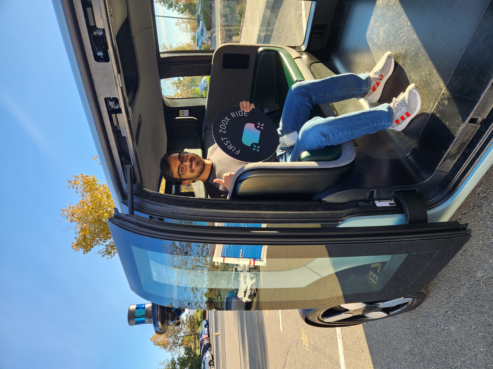
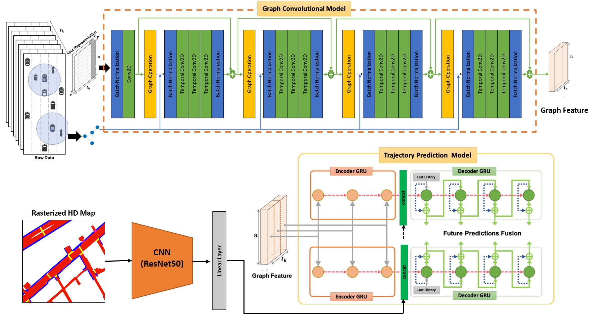
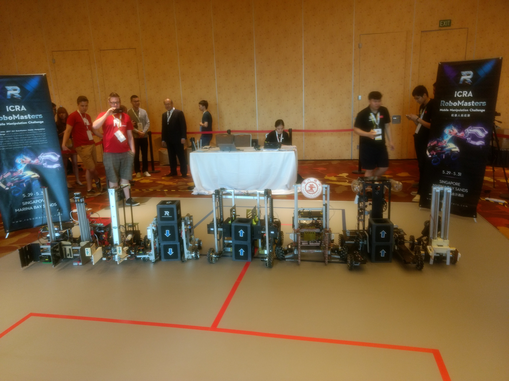
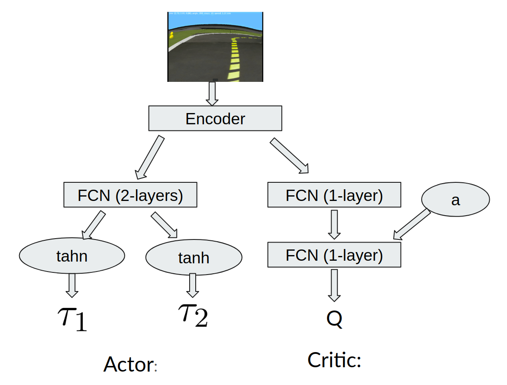
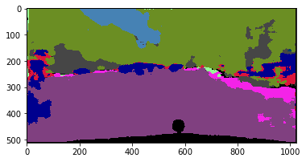
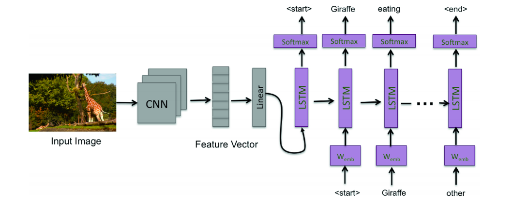
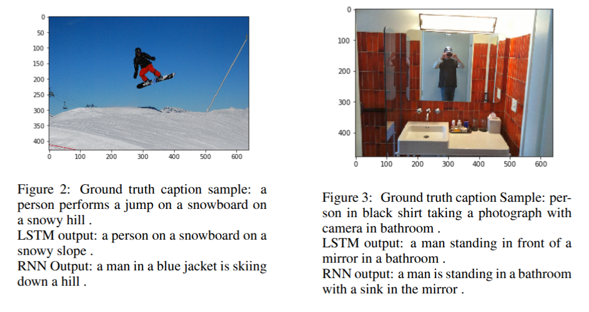

- Developing end-to-end driving capabilities using vision-language models.
- Led the design, development, deployment, and maintenance of an ML-based teleoperation notification system that enabled a shift from 1:1 to 1:N monitoring, reducing in-service vehicle stoppage time by thousands of hours.
- Built embedding-space clustering workflows that surfaced challenging behavior scenarios, improved uncertainty bounds on evaluation metrics, and reduced manual triage effort.
- Developed a versatile task pipeline that streamlined training, evaluation, and production workflows for multiple models at scale.
- Developed a learned heuristic for a search-based planner that improved planning speed by around 20%.

Software Engineer · Autonomous Driving & Robotics
Sutej Pramod Kulgod
I build foundation models and motion planning systems for autonomous vehicles. My work today focuses on combining perception, prediction, and planning for Level 5 autonomy using VLMs.
My journey has taken me from the factory floor at Tata Motors, to a six-person startup at Nymble, to large-scale autonomous vehicle programs at Torc and Zoox. Along the way, I have worked across technologies ranging from manufacturing systems and embedded controls to robotics, motion planning, and modern foundation models. That breadth has shaped how I work: I like bridging real-world operational constraints with advanced machine learning, whether in a six-person startup or in organizations with thousands of employees.
Work Experience
- Worked on behavior, trajectory planning, and speed control for Level 4 autonomous semi-trucks operating on highways.
- Developed data-driven adaptive cruise control, curved-road speed control, and grade-based speed management.
- Built search-based planning logic for lateral and longitudinal maneuvering, including biasing for agents in neighboring lanes at highway speeds.
- Developed intersection behavior logic for path selection and stop/go decisions at yellow lights.
- Received the “Welcome Aboard” award in Oct 2020 for critical data-driven contributions to speed control during the first four months.
- Developed an ingredient temperature control algorithm for cooking robots using fuzzy PID and thermopile arrays.
- Built a ROS2-based communication backbone for monitoring, sensing, and actuation across the robot.
- Prototyped image-based motion tracking and ingredient detection using transfer learning.
- Managed a weld line with over fifty employees in the frame shop for small commercial vehicles.
- Improved frame production quality by identifying root causes of defects and driving fixes at OEM and vendor sites.
Internships
E
Student Researcher & Summer Research Intern
- Developed phase-space motion primitives for general bipedal robots to achieve non-periodic locomotion.
- Formulated co-safe LTL task specifications as deterministic shortest-path problems and solved them via graph search.
- Designed an anytime motion-planning algorithm for robots with hybrid locomotion dynamics to satisfy infinite-horizon temporal-logic tasks.
I
Research Intern
- Developed a tag-based indoor localization method for quadcopters with downward-facing cameras using C++ and ROS.
- Designed robust algorithms for line following, waypoint navigation, trajectory tracking, and autonomous landing on moving platforms in cluttered environments.
I
Research Intern
- Designed an oscillatory cylinder steam engine for concentrated solar thermal power generation.
- Built analytical kinematic and dynamic models in MATLAB and optimized stress and heat distribution using thermodynamic and vibration analysis.
T
Summer Intern
- Received training on composite part production, non-destructive testing, and lean manufacturing principles.
- Conducted labour and cycle-time analysis, 5S auditing, and implemented process improvements in composite manufacturing.
Achievements
- Welcome Aboard Award at Torc Robotics (Oct 2020) for noteworthy contributions within the first six months.
- Student travel award for presenting work at the American Control Conference (ACC) 2020.
- Robot sponsorship and sole undergraduate in the only Indian team to participate in the final round of the DJI RoboMaster Mobile Manipulation Challenge at ICRA 2017, Singapore.
Education
M.S. in Electrical and Computer Engineering
Coursework: Sensing & Estimation in Robotics, Planning & Learning in Robotics, Reinforcement Learning, Cooperative Control of Multi-agent Systems, Linear Control Design, Computer Vision, Deep Learning.
B.Tech. in Mechanical Engineering
Software Skills
- Python
- PyTorch
- C++
- ROS / ROS2
- Drake
- OpenAI Gym
- C
- OpenCV
- rviz
Research & Patents
Publications
Reducing Text Bias in Synthetically Generated MCQAs for VLMs in Autonomous Driving
Investigates hidden textual shortcuts in synthetic multiple-choice benchmarks for autonomous-driving vision-language models and proposes a generation and training pipeline that drastically reduces “blind” accuracy without visual input.
Temporal Logic Guided Locomotion Planning and Control in Cluttered Environments
Presents a framework that composes temporal-logic task specifications with motion primitives for bipedal locomotion, enabling dynamically stable walking in cluttered environments via integrated planning and low-level control.
Low Cost In-line Pipe Leak Detection Robot
Designs and prototypes a low-cost in-pipe robot capable of localizing leaks using onboard sensing and signal processing, aimed at cost-effective monitoring of long pipeline networks.
Simulation and Analysis of Energy Harvesting from Grey Water and Rain Water in High Rises
Evaluates the feasibility of harvesting energy from grey water and rainwater in high-rise buildings, using simulation to study flow rates, head, and power output from small-scale hydro setups integrated into drainage infrastructure.
Detection and Analysis Model for Grammatical Facial Expressions in Sign Language
Explores machine learning methods to recognize grammatical facial expressions that encode syntactic information in sign language, using 3D facial keypoints and sequence models for classification and analysis.
Anytime Motion Planning for Infinite-horizon Tasks Specified by Temporal Logic Formulas
Ongoing work on scalable anytime graph-search methods for hybrid-dynamics robots tasked with infinite-horizon temporal-logic specifications, extending finite-horizon LTL-guided locomotion planning.
Patents
Adaptive Self-Supervised Learned Model for Controlling a Vehicle
Describes an adaptive self-supervised learning architecture for vehicle control that continuously refines a world model from fleet data, improving robustness to distribution shift in real-world driving.
Determining Dynamic Route Data
Introduces methods for generating and updating route data based on dynamic traffic, map, and behavioral priors, enabling safer and more efficient routing for autonomous and assisted-driving systems.
Self-Supervised Learned Model for Controlling a Vehicle
Covers a self-supervised framework for learning vehicle control policies directly from sensor data and ego-motion, reducing reliance on manually labeled driving actions.
Projects
GitHub · GitLab — matched repos linked below where available.
Multimodal trajectory prediction
Implemented a novel graph-based machine learning model with HD map inputs to perform multimodal trajectory prediction for all vehicles in a given scene. Trained and evaluated on the nuScenes prediction challenge dataset (MinADE_5: 2.46, MinADE_10: 1.87, MinFDE_1: 10.68). Related: graph-based interaction-aware prediction (GRIP++) on Apollo.

Improved Batch-Constrained Q-learning (Improved BCQ)
Developed Improved BCQ, a batch-constrained off-policy algorithm trading off Q-value maximization and behavior cloning. Showed ~20% improvement in long-term rewards over BCQ on MuJoCo continuous-control tasks across batch settings.
Bachelor's thesis – multi-quadcopter search
With Prof. K.R. Guruprasad: modeled object-of-interest state-estimation error for a downward-facing camera on a quadcopter; implemented centroidal Voronoi configuration–based search with multiple quadcopters; validated with AR.Drone simulations in Gazebo.

Quadcopter navigation (IIT Bombay)
Tag-based indoor localization, line following, waypoint navigation, trajectory tracking, and autonomous landing on moving platforms for quadcopters with downward-facing cameras (C++, ROS).


Mobile manipulator for RoboMaster
Designed path planning and control with image-based state estimation for a mobile manipulator. Used it to move and stack boxes for the tallest structure in the DJI RoboMaster Mobile Manipulation Challenge at ICRA 2017.

Driving using reinforcement learning
Built DDPG and TD3 agents for Duckietown from dashcam images; reduced training time and replay size by using fully convolutional autoencoder encodings as input to policy and Q-networks.

Image segmentation & captioning
Semantic segmentation on Cityscapes with fully convolutional autoencoder and U-Net (73.9% and 81.3% pixel accuracy). Image captioning on COCO with LSTM/RNN (BLEU‑1 up to 90.09, BLEU‑4 up to 0.44). CNN-based image detection service.




Reinforcement learning studies
Implemented DDPG, TD3, and REINFORCE on MuJoCo; value and policy iteration for inverted pendulum under noise; SARSA and Q-learning for MountainCar.


Path planning for 3D environments
Weighted-A*, RTAA*, RRT*, bidirectional-RRT, and RRT-Connect with path smoothing for a point-mass robot in 3D, with translation and timing constraints.


Particle filter SLAM
State estimation for a differential-drive robot (IMU + odometry); particle filters in an occupancy grid from LiDAR; textured map from RGB‑D floor detection.


Low-cost automated guided vehicle (AGV)
Designed and fabricated a low-cost AGV for Daimler India with an innovative tugging mechanism for docking and undocking with trolleys.
Contact
I’m always happy to connect about autonomous driving, robotics, and applied machine learning.
Email: spkulgod@gmail.com
LinkedIn: sutej-pramod-kulgod
GitHub: spkulgod
GitLab: Personal projects
Google Scholar: research profile